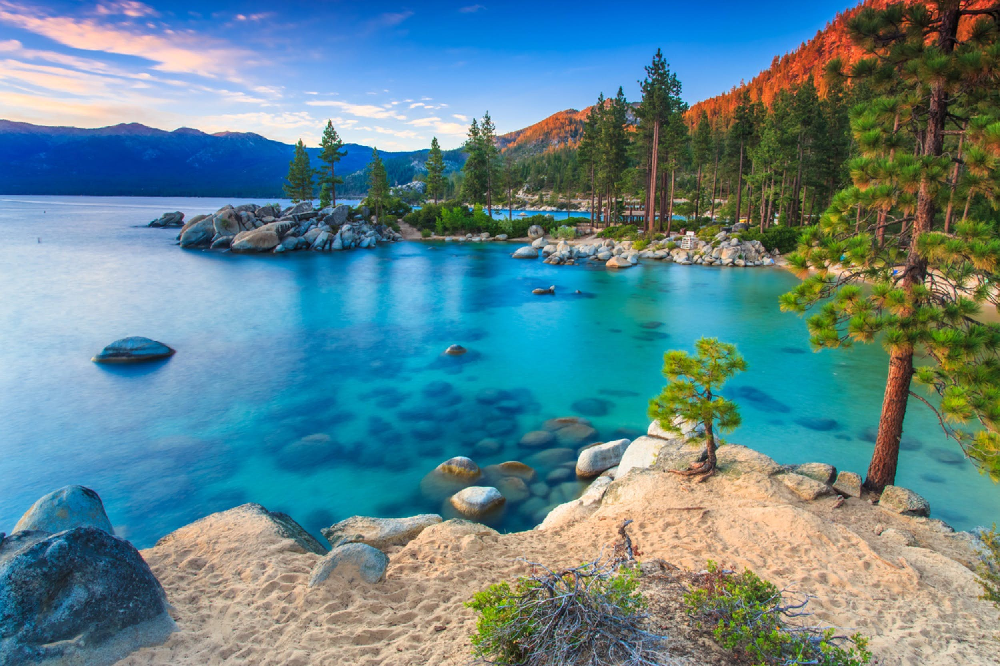

When thinking about traveling, it can sometimes be easier and more budget-friendly to travel within the United States. Fret not, there are still so many beautiful locations within the United States that are worth visiting. In no particular order, here are 10 of the most picturesque places to visit within the country.


- 